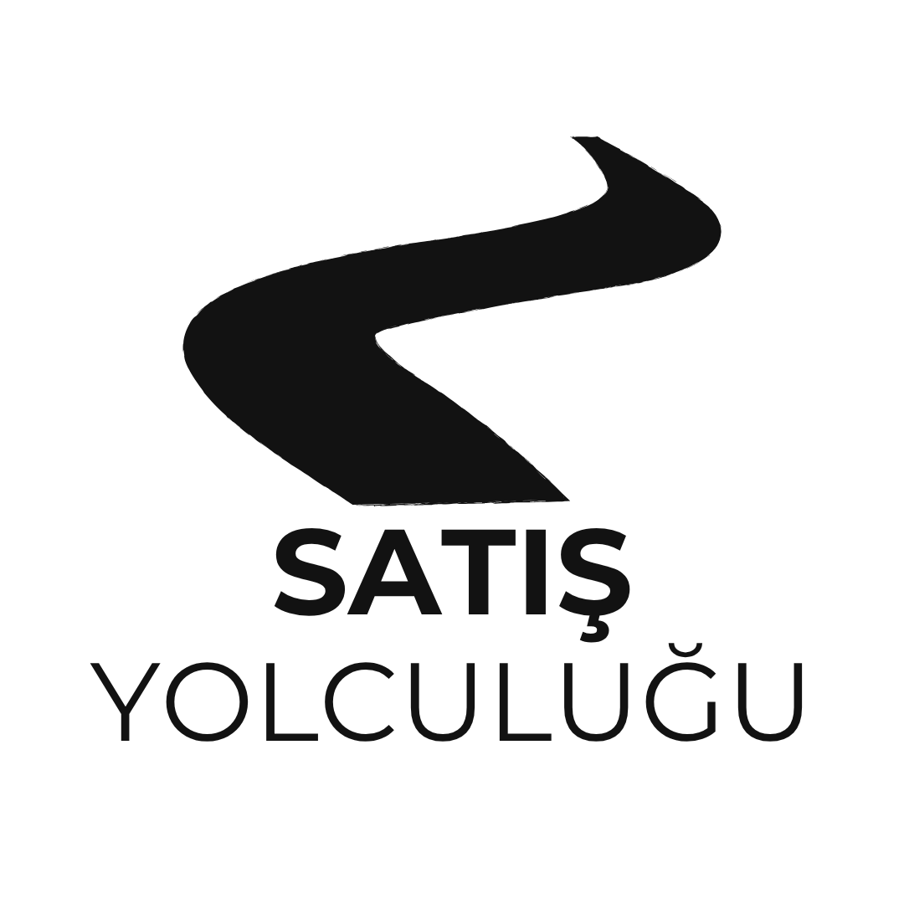
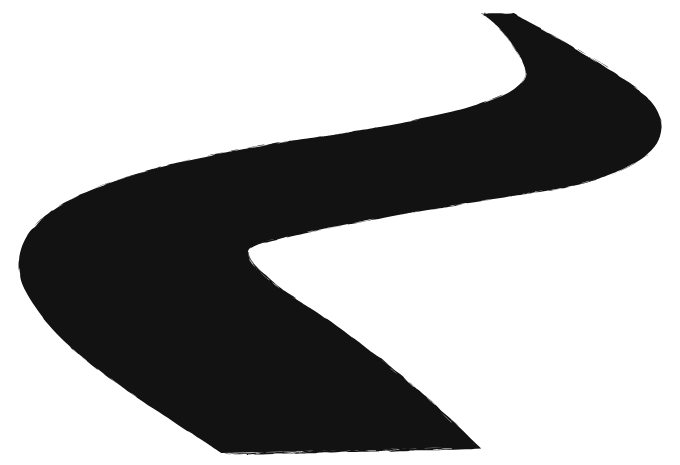

SATIŞ TEKNİKLERİ · BU SEZON
BÖLÜM 1
SPIN
BÖLÜM 2
yakında
BÖLÜM 3
yakında
…
yakında
Bu sezon satış tekniklerine de değiniyoruz.
SATIŞ TEKNİKLERİ · BÖLÜM 1
SPIN
TEKNİĞİ
Neden SPIN?
?
Özellik
Fiyat
Demo
Özellik
Referans
Özellik
z z z
ANLATARAK SATMAK
DOĞRU SORULARI SORMAK
Müşteri dinlemiyor mu, sıkılıyor mu?
Muhtemelen bir şeyler anlatıyorsunuz.
Müşteri kendi kendine satın alır.

S
P
I
N
SITUATIONDurum
PROBLEMProblem
IMPLICATIONEtki
NEEDİhtiyaç
SPIN NEDİR?
4 aşamalı bir
soru sorma sanatı
soru sorma sanatı
S
1 / 4
SITUATION
Durum
Müşterinin mevcut durumunu anlamak için.
ZATEN
web sitesinde
LinkedIn'de
Kaç kişi çalışıyor?
Cironuz nedir?
SORMAYIN
✓ Bağlam kurdurun
Mevcut süreçleriniz şu an nasıl işliyor?
P
2 / 4
PROBLEM
Yarayı kaşıyın.
Problemi müşterinin ağzından duyun.
Süreçte nerelerde tıkanıyorsunuz?
Hangi konularda zorluk yaşıyorsunuz?
SORUN
KRİZ
I
3 / 4
IMPLICATION
Etki
Sihrin başladığı yer.
ÇOĞU SATIŞÇI I'YI ATLIYOR
Bu sorunu çözmemek size yılda ne kadara mal oluyor?
Bu aksaklık ekibin motivasyonunu nasıl etkiliyor?
Sorunu acil bir krize dönüştürün.
N
4 / 4
NEED
İhtiyaç
Çözümü siz söylemeyin, onlara söyletin.
Bu sorunu çözmek kârlılığınızı nasıl artırır?
Bu süreci otomatize etseydiniz, kazandığınız zamanı nerede kullanırdınız?
S
P
I
N
SOMUT BİR ÖRNEK
Bir CRM yazılımı
satarken SPIN
satarken SPIN
CRM
MüşteriCRM GÖRÜŞMESİ
SSituation · Durum
SATIŞÇI
Şu an satış ekibiniz müşteri takibini nasıl yapıyor?
MÜŞTERİ
Excel ile.
PProblem
Peki Excel kullanırken veri girişi hataları veya takip edilemeyen müşteriler oluyor mu?
Evet oluyor, bazen kaçırıyoruz.
IImplication · Etki
Kaçırılan bu fırsatların yıllık ciro kaybına etkisi sizce nedir?
Bu durum satış ekibinizin moralini nasıl etkiliyor?
NNeed · İhtiyaç
Eğer bu takibi otomatize edip hata payını sıfıra indirseydik, bu yıl sonu hedeflerinize ulaşmanızı nasıl etkilerdi?
O harika olurdu, %20–%30 büyürdük.
“Of, çok para
kaybediyoruz.”
kaybediyoruz.”
İŞTE İSTEDİĞİMİZ NOKTA
PIPELINE'DAKİ YERİ
SPIN fırsatları da eler.
S
P
I
N
DİSKALİFİYE
FORECAST
Satın almaya ikna eder
ve adayları diskalifiye eder.
Acı yoksa satış yok.
Tahmin tutarlılığı artar.
Boşuna kürek çekmeyin.
TOPARLAYALIM
Özellik anlatmak değil,
problemin maliyetini
fark ettirmek.
fark ettirmek.
İnsanlar özellikleri değil, sorunlarının çözümünü ve değeri satın alır.
Bir bölümün daha sonuna geldik.
Spotify · Apple Podcasts
Takip et
Yıldız ver
Yorum yap
Bir sonraki bölümde görüşmek üzere.
S
P
I
N